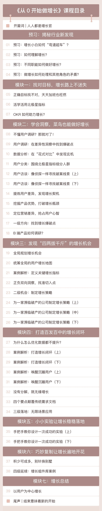

- 00 开篇词 人人都是增长官.md
- 01 预习 增长小白如何“弯道超车”？.md
- 02 预习 如何理解“增长”？.md
- 03 预习 不同职能如何做好增长？.md
- 04 预习 做增长如何处理职能间的矛盾？.md
- 05 正确目标找不对，天天加班也枉然.md
- 06 活学活用北极星指标.md
- 07 OKR如何助力增长？.md
- 08 不懂用户调研？那就对了！.md
- 09 调研目标：在差异性洞察中找到爆破点.md
- 10 数据分析：在“花式对比”中发现玄机.md
- 11 用户分类：围绕北极星指标细分人群.md
- 12 用户访谈：像侦探一样寻找破案线索（上）.md
- 13 用户访谈：像侦探一样寻找破案线索（下）.md
- 14 提炼用户差异，发现增长契机.md
- 15 挖掘产品优势，打破增长瓶颈.md
- 16 定位营销差异，抢占用户心智.md
- 17 一级方向：找到增长爆破点.md
- 18 B端产品如何调研？.md
- 19 全局规划增长机会.md
- 20 统筹全局的用户增长地图.md
- 21 案例解析：定义关键增长指标.md
- 22 正负双向洞察，找准切入点.md
- 23 二级机会：制定增长策略.md
- 24 为一家濒临破产的公司制定增长策略（上）.md
- 25 为一家濒临破产的公司制定增长策略（中）.md
- 26 为一家濒临破产的公司制定增长策略（下）.md
- 27 为什么指标数据怎么优化都不提升？.md
- 28 案例解析：打造增长闭环（上）.md
- 29 案例解析：打造增长闭环（下）.md
- 30 案例解析：唤醒沉睡用户（上）.md
- 31 案例解析：唤醒沉睡用户（下）.md
- 32 没有分解，就无缘增长.md
- 33 四个要点颠覆传统需求文档.md
- 34 三级落地：无限场景应用.md
- 35 手把手教你设计一次成功的实验（上）.md
- 36 手把手教你设计一次成功的实验（下）.md
- 37 积少可成多，别针换别墅.md
- 38 四级延续：增长组件库案例.md
- 39 以用户为中心增长.md
- 增长导航图 增长专栏的知识架构是怎样的？.md
- 尾声 结束意味着新的开始.md
- 预习答疑 你需要一张思维导图吗？.md
00 开篇词 人人都是增长官
你好，我是刘津。欢迎你加入我的增长专栏，和我一起“从0开始做增长”。
最近几年，行业经历了各种震荡和变化：随着人口红利的萎缩，2016年左右中国互联网进入下半场；2017年可口可乐宣布取消CMO（首席营销官），由CGO（首席增长官）替代；之后各种增长类职位如雨后春笋般涌出；2018年底到2019年，一大批顶级公司宣布裁员并停掉不赚钱的业务，还有不少小公司濒临破产。
在我看来，这些情况的出现并不意外，这只是在为多年前不重视产品价值与用户价值、不惜成本过于冒进的行为买单。“繁华”时期盛产的泡沫终将慢慢消退，最终呈现出的是一派秩序井然。
但是在行业调整的过程中，最“倒霉”的还是普通从业者，毕竟“覆巢之下安有完卵”？
记得我在2018年中下旬的时候去各大公司分享增长理念，还有很多人对此感到不以为然，认为自己不是做增长的，这和他们“份内”的工作没有关系。结果不出几个月，就不断有人联系我，问公司裁员了，现在该怎么办？
在逆境面前，你可以感到绝望，也同样可以看到希望。
越是人口、流量、资金红利萎缩的时候，越是增长被重视的时刻。在最近的两年，我顺应时代变化，从0开始探索增长，做出了很多亮眼的成绩，为公司带来了巨大的价值，并在这个过程中沉淀出了一套体系化的新方法。
最近一年我不断地完善这套独家的增长理念，现在已经初具雏形，希望可以帮助每一个需要的人弯道超车，顺势成为一名优秀的从业者，把握好时代赋予我们难得的机遇和挑战。
我是刘津，创办了UGDlab，持续研究并传播独家的UGD（User Growth Design 用户增长设计）跨界增长理念和实战技巧。目前已经培养了大量来自全国各大知名公司的产品经理、运营、设计师学习并实践UGD理念，取得了不少成果。我还写过《破茧成蝶》《破茧成蝶2》这两本畅销书，应邀在多个行业TOP大会、公司发表增长主题的演讲。
我曾在阿里巴巴和网易担任设计管理岗位，目前是宜人贷UGD用户增长设计团队负责人，为千万级用户体量的产品制定增长策略。
作为一名设计背景的增长理念发起者，我想我的经历可以让你充分意识到：无论你是什么职能或角色，都一样可以做好增长。在新的市场环境、新的理念面前，平凡人更有机会借势爆发。
当然，我的增长理念并不同于市面上的增长课程，它有如下特点。
第一，体系完整，融合多种视角跨界探讨增长。
目前市面上的增长课程多数只有实战分析，没有提炼出完备的理论，这就意味着这些方法很可能只适用于某种特定情形，很难被复制。而我想要分享给你的是一套可以成功复制的增长思路和实践技巧。
另外，大家讲增长各有侧重点，毕竟“术业有专攻”：比如增长黑客侧重从营销和数据角度讲；增长产品经理侧重从功能和留存角度讲；CMO侧重从品牌及广告投放的角度讲……
这些其实都不能完全代表增长，因为增长是非常体系化的事情，需要从全局视角来看才能发现不一样的精彩，这和在某领域专业与否可能关系并不大。
记住，未来的职能方向一定是“融合”而非“精专”。以我的经验来看，最有效的增长方式往往是出其不意、简单而非复杂、巧妙而非专业的。这也为你未来“弯道超车”创造了有利的条件。
第二，实操性强，推动不同职能共同落地增长。
数据驱动产品，产品跨界运营，运营了解设计，设计关注商业价值……增长不仅仅是某个岗位的事情，它越来越成为各个岗位都应具备的一种底层能力。无论是什么角色都需要围绕产品、围绕用户做增长。
然而，光有理论支撑还不够，做增长最重要的是能够落地。
所以，我在专栏里不仅会分享理念，更重视切实可行的落地方式，确保在工作中活学活用。这套理念可以说一通百通：不仅可以运用在工作上，包括品牌、产品、运营、用户研究、设计、数据的方方面面，还可以解决生活中的各种决策问题。
第三，快速见效，帮你成为有增长思维的稀缺人才。
我之前已经办了几期线上教学，积累了不少授课经验。学员们反馈最多的就是，感觉自己的认知维度提升了不止一个档次，视野和思考问题的方式都不一样了，短时间内就让领导和同事刮目相看。还有不少学员用这套方法提出了差异性洞察及后续的增长策略，得到了公司高层的认可并已经落地执行。
在早期，我的学员主要都是毫无增长经验的设计师，最近才陆陆续续多了很多的产品经理和运营人员，所以这个课程真的无惧零基础增长者，只要你有一颗好学的心。
当然，讲课容易写出来难。
这是我第一次写专栏，我没有想到极客时间对专栏的要求如此之高。编辑们花了很多心血和我一起打磨专栏内容，务必要让大家“听得懂、学得会、做得到”。由于增长本身就是新理念，又有一定难度，因此关于如何表述才更容易被学会这方面，我们做了很多尝试。
最终我们决定把专栏内容设计成一种螺旋式上升的结构。
总共7个部分，每个部分都有“发现→对比→分析→总结”这个过程，第一部分的“总结”就是第二部分的“发现”，每个部分都前后衔接、环环相扣，最终手把手带你了解整个增长路径，让你在不知不觉中获得认知升级。
另外，每篇文章里都有思维+案例+思考练习，通过大量案例让你了解方法，再用方法推动下一轮的实践。

我喜欢增长，增长不是数字的提升，而是一套四两拨千斤的人生哲学。我们要在千头万绪中找到各种矛盾中的平衡点并获得最大价值，这谈何容易，但恰是这种挑战让增长这件事情充满了乐趣。
这些我从零开始积累起来的做增长的经验和可复用的方法，我会在专栏里毫无保留地和你分享。
在接下来的三个月时间里，我们一起探索、学习最前瞻最酷的增长哲学！
在正式开始之前，我也想听见你的声音，你现在是什么岗位？为什么对增长感兴趣？关于增长你已经知道哪些内容？你希望在增长这个领域取得怎样的成就？
欢迎你把这些问题的思考写在留言区，我们一起做好准备，向着同一个目标出发。
人生的意义就在于不断挑战自己的极限，提高认知维度，最后笑傲红尘。很开心接下来的学习旅程与你同行，三个月后，你也将成长为一名增长官。
© 2019 - 2023 Liangliang Lee. Powered by gin and hexo-theme-book.